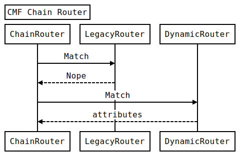

Modernizing Drupal
Using Symfony 2
Presented by Larry Garfield
Speaking of Drupal

2% of the Web runs Drupal
Over 20,000 new Drupal 7 sites every month

Conclusion
Drupal is awesome!
Entities/Fields
Click together your own data structure

Rules
Click together your own business logic

Views
Click together your own lists and queries

Drupal
Click together your own site


What are we using?
- HttpFoundation
- HttpKernel
- Routing
- HttpFoundation
- DependencyInjection
- EventDispatcher
- Symfony CMF Routing
Odds and ends
- ClassLoader
- YAML
- Serializer
- Validator
index.php
require_once __DIR__ . '/core/includes/bootstrap.inc';
drupal_handle_request();
drupal_handle_request()
function drupal_handle_request($test_only = FALSE) {
// Initialize the environment, load settings.php,
// activate a PSR-0 class autoloader with required namespaces registered.
drupal_bootstrap(DRUPAL_BOOTSTRAP_CONFIGURATION);
$kernel = new DrupalKernel('prod', FALSE, drupal_classloader(), !$test_only);
$kernel->boot();
drupal_bootstrap(DRUPAL_BOOTSTRAP_CODE);
// Create a request object from the HttpFoundation.
$request = Request::createFromGlobals();
$response = $kernel->handle($request)->prepare($request)->send();
$kernel->terminate($request, $response);
}HttpKernel
Same as it ever was
CMF Router
Collaboration FTW!


system.routing.yml
system.cron:
pattern: '/cron/{key}'
defaults:
_controller: '\Drupal\system\CronController::run'
requirements:
_access_system_cron: 'TRUE'
system.machine_name_transliterate:
pattern: '/machine_name/transliterate'
defaults:
_controller: '\Drupal\system\MachineNameController::transliterate'
requirements:
_permission: 'access content'
aggregator.routing.yml
aggregator_admin_overview:
pattern: 'admin/config/services/aggregator'
defaults:
_content: '\Drupal\aggregator\Routing\AggregatorController::adminOverview'
requirements:
_permission: 'administer news feeds'
aggregator_admin_settings:
pattern: 'admin/config/services/aggregator/settings'
defaults:
_form: '\Drupal\aggregator\Form\SettingsForm'
requirements:
_permission: 'administer news feeds'
Route Enhancers
class ContentControllerEnhancer implements RouteEnhancerInterface {
// ...
protected $types = array(
'drupal_dialog' => 'controller.dialog:dialog',
'drupal_modal' => 'controller.dialog:modal',
'html' => 'controller.page:content',
);
public function enhance(array $defaults, Request $request) {
if (empty($defaults['_controller']) && !empty($defaults['_content'])) {
$type = $this->negotiation->getContentType($request);
if (isset($this->types[$type])) {
$defaults['_controller'] = $this->types[$type];
}
}
return $defaults;
}
}
Any _content route can be a page, or modal, or ajax replacement, automatically!
That's the power of mime types
(_form routes soon as well)
Built-in ParamConverter
class ParamConverterManager implements RouteEnhancerInterface {
public function enhance(array $defaults, Request $request) {
$converters = array();
$route = $defaults[RouteObjectInterface::ROUTE_OBJECT];
foreach ($this->converters as $converter) {
$converter->process($defaults, $route, $converters);
}
// ...
return $defaults;
}
}
Controllers
It's just ControllerResolver
- Function (once we remove a BC shiv)
- POPO method
- ContainerAware object method
- Services (methods)
- Closures (but we don't use 'em)
- ControllerInterface
ControllerInterface
interface ControllerInterface {
/**
* Instantiates a new instance of this controller.
*
* @param ContainerInterface $container
* The service container this object should use.
*/
public static function create(ContainerInterface $container);
}
ControllerInterface
class AggregatorController implements ControllerInterface {
protected $entityManager;
protected $database;
public static function create(ContainerInterface $container) {
return new static(
$container->get('plugin.manager.entity'),
$container->get('database')
);
}
public function __construct(EntityManager $entity_manager, Connection $database) {
$this->entityManager = $entity_manager;
$this->database = $database;
}
public function feedAdd() {
$feed = $this->entityManager
->getStorageController('aggregator_feed')
->create(array(
'refresh' => 3600,
'block' => 5,
));
// ...
}
More sharing
Doctrine annotations
Not the ORM, just the annotations library
Guzzle
No wrapper, just Guzzle

PHPUnit
(Combined with Simpletest, sorry)
PSR-3 Logger
Zend_Feed?
Maybe, now that it has fewer dependencies
Other goodies
HTML5

Responsive
No more IE 8

Great, so when can I use it?
Code freeze: 1 July
We're almost out of time, and need your help
Sprints Friday-Monday
Jumping in
- Come to the sprints
- Checkout the code
- Join #Drupal-Contribute and #Drupal-WSCCI
- Tell us what we're doing wrong (No, really!)
We release when we run out of critical bugs
Hi! I'm very excited about symfony2 framework, though I cannot find a good CMS to use with symfony2. Can any of you recommend any?